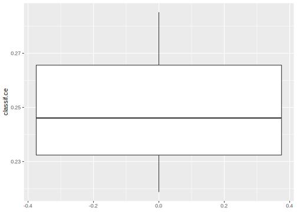
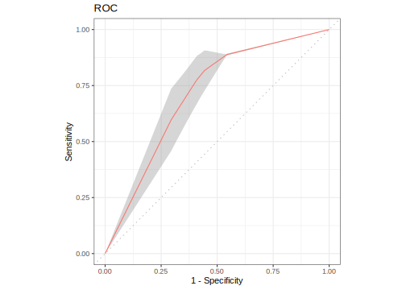

2.5 Resampling
Resampling strategies are usually used to assess the performance of a learning algorithm.
mlr3 entails 6 predefined resampling strategies:
Cross-validation, Leave-one-out cross validation, Repeated cross-validation, Out-of-bag bootstrap and other variants (e.g. b632), Monte-Carlo cross-validation and Holdout.
The following sections provide guidance on how to set and select a resampling strategy and how to subsequently instantiate the resampling process.
Below you can find a graphical illustration of the resampling process:

2.5.1 Settings
In this example we use the iris task and a simple classification tree (package rpart).
When performing resampling with a dataset, we first need to define which approach should be used.
The resampling strategies of mlr3 can be queried using the .$keys() method of the mlr_resamplings dictionary.
mlr_resamplings
## <DictionaryResampling> with 6 stored values
## Keys: bootstrap, custom, cv, holdout, repeated_cv, subsamplingAdditional resampling methods for special use cases will be available via extension packages, such as mlr3spatiotemporal for spatial data (still in development).
The model fit conducted in the train/predict/score chapter is equivalent to a “holdout”, so let’s consider this one first.
Again, we can retrieve elements from the dictionary mlr_resamplings via $get() or with a convenience function (rsmp()):
resampling = rsmp("holdout")
print(resampling)
## <ResamplingHoldout> with 1 iterations
## * Instantiated: FALSE
## * Parameters: ratio=0.6667Note that the Instantiated field is set to FALSE.
This means we did not actually apply the strategy on a dataset yet, but just performed a dry-run.
Applying the strategy on a dataset is done in section next Instantiation.
By default we get a .66/.33 split of the data. There are two ways in which the ratio can be changed:
- Overwriting the slot in
.$param_set$valuesusing a named list:
- Specifying the resampling parameters directly during construction:
2.5.2 Instantiation
So far we just set the stage and selected the resampling strategy.
To actually perform the splitting, the resampling needs a Task.
By calling the method instantiate(), splits into training and test set are calculated and stored in the Resampling object:
2.5.3 Execution
With a Task, a Learner and Resampling object we can call resample() and create a ResampleResult object.
Before we go into more detail, let’s change the resampling to a “3-fold cross-validation” to better illustrate what operations are possible with a ResampleResult.
Additionally, we tell resample() to keep the fitted models via the flag store_models:
task = tsk("pima")
learner = lrn("classif.rpart", maxdepth = 3, predict_type = "prob")
resampling = rsmp("cv", folds = 3L)
rr = resample(task, learner, resampling, store_models = TRUE)
print(rr)
## <ResampleResult> of 3 iterations
## * Task: pima
## * Learner: classif.rpart
## * Warnings: 0 in 0 iterations
## * Errors: 0 in 0 iterationsThe following operations are supported with ResampleResult objects:
-
Calculate the average performance:
-
Extract the performance for the individual resampling iterations:
rr$score(msr("classif.ce")) ## task task_id learner learner_id resampling ## 1: <TaskClassif> pima <LearnerClassifRpart> classif.rpart <ResamplingCV> ## 2: <TaskClassif> pima <LearnerClassifRpart> classif.rpart <ResamplingCV> ## 3: <TaskClassif> pima <LearnerClassifRpart> classif.rpart <ResamplingCV> ## resampling_id iteration prediction classif.ce ## 1: cv 1 <list> 0.2852 ## 2: cv 2 <list> 0.2461 ## 3: cv 3 <list> 0.2188 -
Check for warnings or errors:
-
Extract and inspect the resampling splits:
-
Retrieve the learner of a specific iteration and inspect it:
-
Extract the predictions:
rr$prediction() # all predictions merged into a single Prediction ## <PredictionClassif> for 768 observations: ## row_id truth response prob.pos prob.neg ## 3 pos pos 0.7054 0.2946 ## 7 pos neg 0.2150 0.7850 ## 8 neg neg 0.2150 0.7850 ## --- ## 764 neg neg 0.2129 0.7871 ## 766 neg neg 0.2129 0.7871 ## 768 neg neg 0.2129 0.7871 rr$predictions()[[1]] # prediction of first resampling iteration ## <PredictionClassif> for 256 observations: ## row_id truth response prob.pos prob.neg ## 3 pos pos 0.7054 0.2946 ## 7 pos neg 0.2150 0.7850 ## 8 neg neg 0.2150 0.7850 ## --- ## 758 pos neg 0.2150 0.7850 ## 765 neg neg 0.2150 0.7850 ## 767 pos neg 0.2150 0.7850
Note that if you want to compare multiple learners, you should ensure to that each learner operates on the same resampling instance by manually instantiating beforehand. This reduces the variance of the performance estimation.
If your aim is to compare different Task, Learner or Resampling, you are better off using the benchmark() function, covered in the next section.
It is basically a wrapper around resample() simplifying the handling of multiple settings.
If you discover this only after you’ve run multiple resample() calls, don’t worry.
You can combine multiple ResampleResult objects into a BenchmarkResult (also explained in the next section).
2.5.4 Custom resampling
Sometimes it is necessary to perform resampling with custom splits. If you want to do that because you are coming from a specific modeling field, first take a look at the mlr3 extension packages. It is important to make sure that your custom resampling method has not been implemented already.
If your custom resampling method is widely used in your field, feel welcome to integrate it into one of the existing mlr3 extension packages. You could also create your own extension package.
A manual resampling instance can be created using the "custom" template.
resampling = rsmp("custom")
resampling$instantiate(task,
train = list(c(1:10, 51:60, 101:110)),
test = list(c(11:20, 61:70, 111:120))
)
resampling$iters
## [1] 1
resampling$train_set(1)
## [1] 1 2 3 4 5 6 7 8 9 10 51 52 53 54 55 56 57 58 59
## [20] 60 101 102 103 104 105 106 107 108 109 110
resampling$test_set(1)
## [1] 11 12 13 14 15 16 17 18 19 20 61 62 63 64 65 66 67 68 69
## [20] 70 111 112 113 114 115 116 117 118 119 1202.5.5 Plotting Resample Results
Again, mlr3viz provides a autoplot() method.


All available plot types are listed on the manual page of autoplot.ResampleResult().